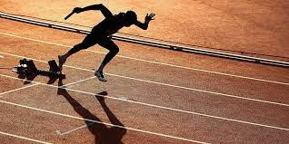

L'allenamento è la fase più importante della pratica sportiva (non solo per l'atletica leggera).
 Un buon percorso di allenamento è molto importante per l'efficacia dell'allenamento stesso, esso deve bilanciare preparazione atletica generale, allenamento tecnico specifico, allenamento tecnico generico e preparazione atletica specifica. Le andature possono essere considerate parte dell'allenamento tecnico. Il percorso di allenamento deve tener conto della condizione fisica dell'atleta, della capacità tecnica, del tempo a disposizione,della concentrazione e del tipo di apprendimento (che può differire molto da un atleta a un altro). Per chi non ha già una buona forma fisica è meglio iniziare con una buona corsa di riscaldamento, esercizi di stretching e mobilità per aumentare l'elasticità durante l'allenamento ed andature per evitare di prendere posizioni scorrette nella corsa.
Tratto da Atletica leggera - Wikibooks, manuali e libri di testo liberi.